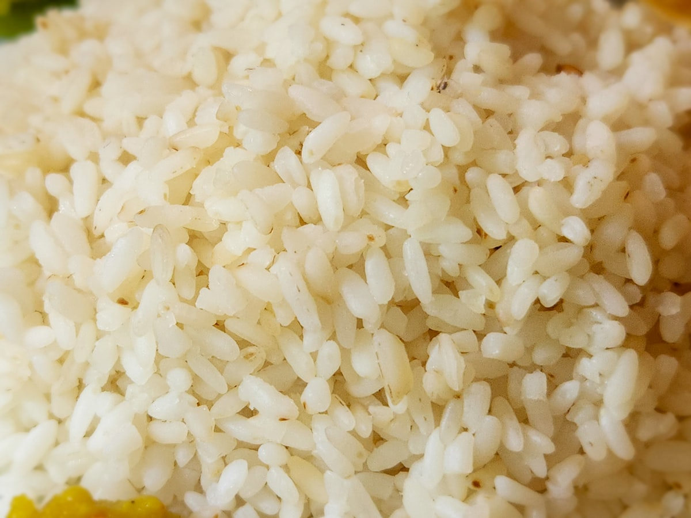
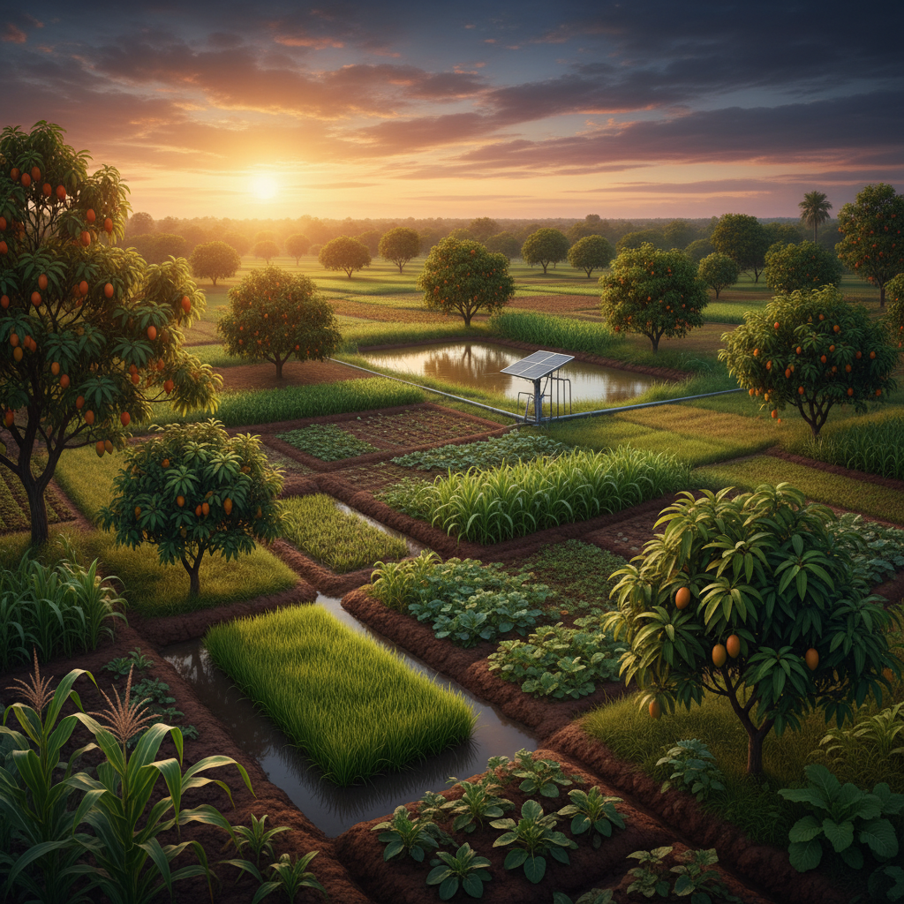
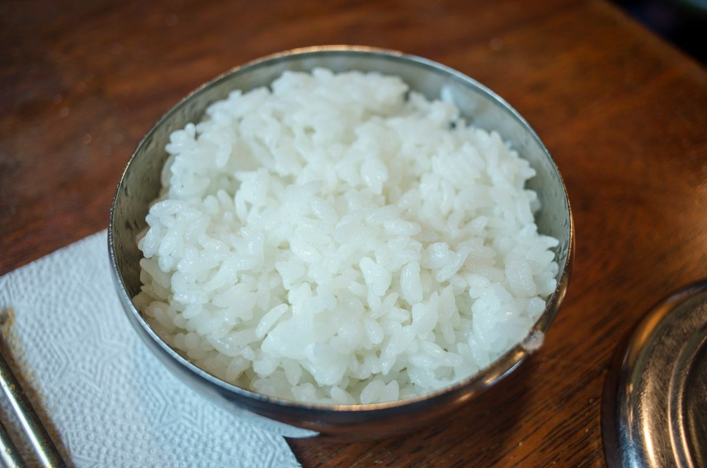
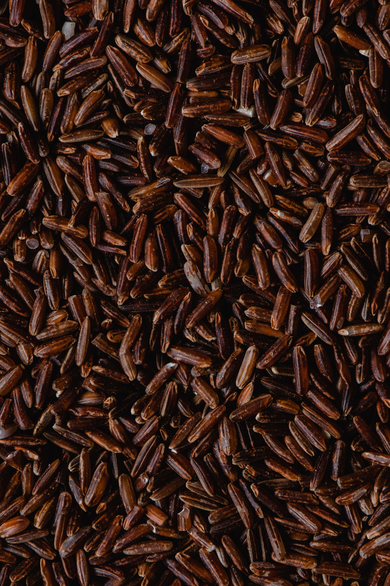
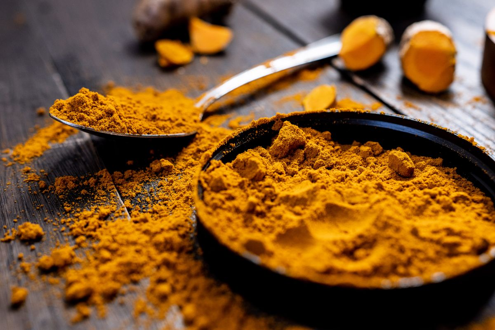
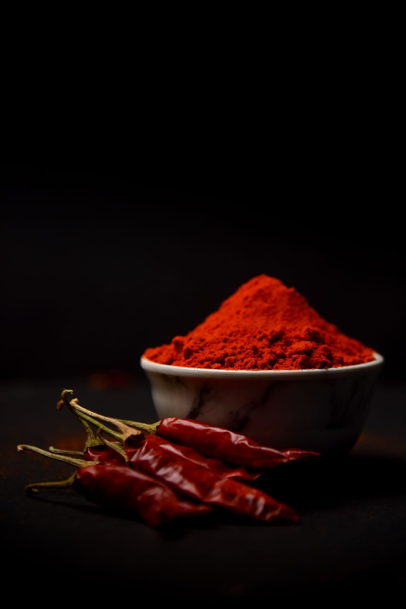

🌱 ORGANIC · UNPOLISHED

A dependable, hearty short-grain rice bred at a respected rice research station. Versatile and satisfying — built for everyday cooking. We grow it organically on our farm and mill it gently, so the bran, germ, fiber and minerals stay in the grain instead of being polished away.
Cooks soft and separate, holds well for dal-chawal, khichdi and lunch-box rice.
| Variety | Karjat 3 |
| Grain | Short, bold |
| Processing | Unpolished, minimally milled |
| Grown at | HariLeaf Farm, Maharashtra |
| Harvest | Kharif 2026 |
| Shelf life | 9 months |
Soft, filling and my kids didn't even notice it's unpolished. Reordering the 10 kg.
Holds shape, nice nutty smell. Packaging was sturdy, arrived in 3 days to Pune.
Needs a 20 min soak for best texture. Otherwise excellent value.
Polishing removes the bran and germ layers. Unpolished rice keeps them, so it has more fiber and minerals than polished white rice.
15–20 minutes, then cook 1 cup rice to 2¼ cups water.
Yes — free delivery to all serviceable pincodes in India.



Karjat 3 was developed at a rice research station in the Konkan to be dependable in the field and satisfying on the plate. We grow it without chemical inputs, harvest by hand and mill it just enough to remove the husk — keeping the bran and germ where the nutrition lives.
Soak 20 min. 1 cup rice : 2¼ cups water. Simmer 18 min, rest 5.
Airtight jar, cool & dry. Best within 9 months of milling.
Konkan-style masoor khichdi →
One-pot, 30 minutes.
Soft, filling and my kids didn't even notice it's unpolished.
Holds shape, nice nutty smell. Arrived in 3 days to Pune.
Needs a 20 min soak for best texture.
Polishing removes the bran and germ layers. Unpolished rice keeps them, so it has more fiber and minerals than polished white rice.
Yes — free delivery to all serviceable pincodes in India.
Hearty short-grain rice, grown without synthetic pesticides or fertilisers and milled just enough to remove the husk, so the bran and germ stay on the grain.
Net quantity: 5 kg · Best before: 9 months from packing · Storage: cool, dry, airtight · Country of origin: India
Packed by: HariLeaf Farms, <address> · FSSAI Lic. No. <14 digits> · Customer care: <phone> / <email>
Developed at a Konkan rice research station. We grow it without synthetic pesticides or fertilisers, harvest by hand and mill it just enough to remove the husk.
Dietary fibre3.2 g Protein7.9 g Magnesium110 mg
Tested 14 Oct 2026 by <NABL lab>. Pesticide residues: not detected (sample).
Download report (PDF) →
Polishing strips the bran and germ — where most of the fiber and minerals live. Ours keeps them.
Soak 20 min · 1 : 2¼ water · simmer 18 min, rest 5.
Konkan-style masoor khichdi →
One-pot, 30 minutes.
Soft, filling and my kids didn't even notice it's unpolished. Reordering the 10 kg.
Holds shape, nice nutty smell. Arrived in 3 days to Pune.
Needs a 20 min soak for best texture.
Polishing removes the bran and germ layers. Unpolished rice keeps them, so it has more fiber and minerals than polished white rice.
15–20 minutes, then cook 1 cup rice to 2¼ cups water.
Yes — free delivery to serviceable pincodes across India (minimum order ₹499).